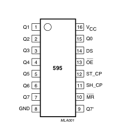

The 74HC595 is an 8-bit shift register(SR) driven by an SPI TX connection. The SPI (Serial Periphal Interface) works by pulsing (or not pulsing) the data pin synchronously with the clock pin to commuicate the desired byte into the register bit by bit. Once transfered the shift register assigns the HIGH or LOW voltage to the output pins.

dsd